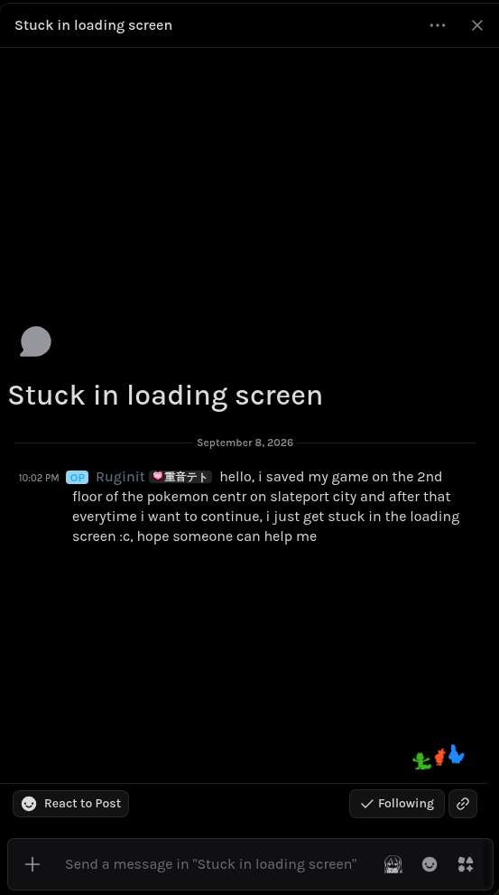
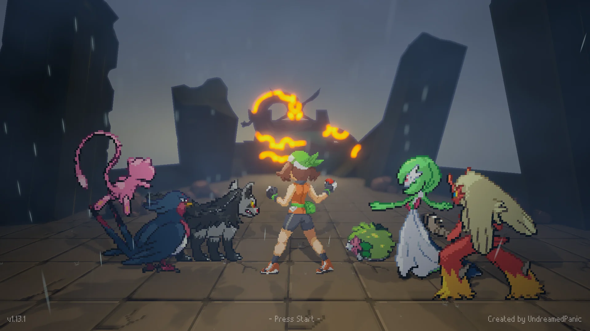

Pokemon Gamma Emerald: fix for the stuck in loading screen
Why: you saved inside a building (for me, the Slateport Pokemon Center) and the game waits forever for the floor to load.
Fix: move your position in the save to the Pokémon Center's respawn tile. You can do it in the browser with the pge save editor, no code:
- Back up the whole
%LOCALAPPDATA%\PokemonEmerald\Saved\.gedfolder. - Open the biggest
.datin there (~1.7 MB) in pge. - Go to
root>properties. There you can findPlayerLocation_0andLastPokeCenterTile_0. - Look at
LastPokeCenterTile_0and write down its X_0 and Y_0. - In
PlayerLocation_0, set x = X_0 × 64 and y = Y_0 × 64. Don't touch z. The ×64 matters:PlayerLocationis in world units, the tile isn't. Example with my save:LastPokeCenterTile_0 X_0 = -541 Y_0 = 2294 ← read these PlayerLocation_0 x = -34048 y = 146624 ← before (stuck) x = -34624 y = 146816 ← after: -541×64, 2294×64 z = 222.67… ← leave it - Download the modified save, put it back in
.gedwith the exact same file name, load the game, and save again outside.
Tested: I did this with pge on a copy of my old stuck save and it loaded fine. The first time, I did the same edit with a custom script instead (that's the rest of this post).
I was ~12 hours into Pokemon Gamma Emerald (the Unreal Engine fan remake), saved inside the Slateport Pokemon Center, restarted the game by accident, and... infinite loading screen. Forever. Forums and some people on the game's Discord server said it could be fixed by moving your position in the save to somewhere outside the Pokémon Center, and that mods had done it for other people. But nobody answered me, and I had no idea how to edit the save.

I was hoping to get some help but yea...
actual feeling
So I opened Claude Code in the save folder and asked it to look around. This post is what it did, step by step, because honestly it was cool to watch and maybe it helps someone with the same problem.
art by Kedr (@Kedr_bit)
Editing saves can break them. Make a backup of the whole save folder before touching anything, and keep it until you've played a while on the fixed save.
Where the save lives
The wiki says saves are in Saved\SaveGames\Slot1.sav, but my version (v1.13.1 when I wrote this) didn't have that at all. Instead there's a hidden folder:
%LOCALAPPDATA%\PokemonEmerald\Saved\.ged\*.dat
# on Linux with Proton / umu, inside the prefix:
drive_c/users/steamuser/AppData/Local/PokemonEmerald/Saved/.ged/There were 5 .dat files with random-looking names.
Step 1: what even is a .dat
Every file started with the bytes GES1, and the rest looked like pure noise, so it was encrypted. Claude searched online and found two community save editors on GitHub: pge by AngeHell47 (the one behind pge.angehell.com) and gammaeditor by CalRL. It cloned them and read pge's source, which already knows how to open these files. The format is:
0x00: the textGES10x04: version (1)0x08: size of the decrypted data0x0C: SHA-1 of the decrypted data (20 bytes, an integrity check)0x20: the actual save, encrypted with AES-256-ECB
The key is in pge's lib/save.php. I'm not pasting it here, go give them the visit. Decrypting is short:
import struct, hashlib
from cryptography.hazmat.primitives.ciphers import Cipher, algorithms, modes
KEY = bytes.fromhex("...") # GES_KEY_HEX from pge's lib/save.php
raw = open("the_save.dat", "rb").read()
assert raw[:4] == b"GES1"
version, plain_size = struct.unpack("<II", raw[4:12])
d = Cipher(algorithms.AES(KEY), modes.ECB()).decryptor()
plain = (d.update(raw[32:]) + d.finalize())[:plain_size]
print("checksum ok:", hashlib.sha1(plain).digest() == raw[12:32])Inside each one there's a slot name and then a normal Unreal Engine save (GVAS). The 5 files were PokemonSaveSlot (the big one, ~1.7 MB, that's the real save), QuestSlot, GiftSlot, GEBerrySlot and GEOptions.
First good news: all 5 passed the SHA-1 check. The save wasn't corrupted. My 12 hours, my pokemons and my 3 badges were all still there.
Step 2: finding why it doesn't load
pge also ships uesave, a tool that turns GVAS saves into JSON. With that, the save was readable, and these fields stood out right away:
CurrentMapName = MAP_Hoenn_Persistant
SavedRoutePath = /Game/BPS/ROUTES/Route_PokeCenter_Slateport
bIsInside = true
PlayerLocation = x -34048, y 146624, z 222.67
LastPokeCenterTile = X -541, Y 2294So the game knows I'm inside the Slateport Pokémon Center. The game's own devlog talks about loading screens waiting for "the floor" to be ready, and about having to hand-place collisions. Our guess: the tile I saved on never confirms its floor, so the loading screen waits forever. That matches what people on Discord said: move the player and it loads.
Claude also noticed that the coordinates are exact multiples of 64, so 1 tile = 64 Unreal units. My position was tile (-532, 2291).
(Side quest that went nowhere: it tried to get the list of all maps from the game's .pak file, but that's encrypted too and the key isn't easy to find, so it dropped that and moved on.)
Step 3: the JSON trap
The easy way would be: save → JSON → edit → back to save. Claude checked that before using it, by converting to JSON and straight back without changing anything, and comparing. The result was 431 bytes different. Same size, but a bunch of float values got rounded in the trip through JSON. Probably harmless, but it's my save, so no.
Instead it wrote a small script (gedtool.py) that walks the GVAS properties and only changes the exact bytes of the fields you ask for. To prove it was safe, it "patched" the save with the values that were already there. The output was byte-for-byte identical to the original.
Small fun detail: to know how booleans are stored, it flipped bIsInside through uesave and diffed the result. Exactly one byte changed: 0x10 = true, 0x00 = false.
Step 4: two fixes, smallest first
It made two versions of the save:
- A: only move
PlayerLocationtoLastPokeCenterTile(-541, 2294). That's the respawn point the game itself saved, so it's a tile the game already trusts. I was stuck on tile (-532, 2291), so it's only 9 tiles over and 3 up/down. Nothing else changed. - B: same as A, plus
bIsInside = falseand an empty route, so the game loads just the Hoenn overworld.
Both were checked by decrypting them again and reading them with uesave (all 48 properties still there). It installed A first and left a tiny script so I could switch:
./usar.sh A # smallest fix
./usar.sh B # if A doesn't work
./usar.sh ORIGINAL # put the original back(That script and gedtool.py were made just for my save and only live on my PC, they're not something to download. If you're stuck, use the TL;DR at the top.)
(The script refuses to run if the game is open. That check kept detecting Claude's own command as "the game", because the command text contained the game's name. It fixed it with the pgrep -f "[P]okemonEmerald" trick.)
Step 5: it worked
Opened the game, loaded, and I was standing in the world again. Fix A was enough. Total time from my first message to the fix being installed was about 20 minutes. Claude's last advice: save again outdoors as soon as possible, because the save still says I'm inside, and saving outside clears that.
What I learned
- Back up first. Before anything else. Every time.
- Community tools are gold. The key and the format were already figured out by people who share their stuff. Credit to pge and gammaeditor.
- "Convert to JSON and back" sounds lossless, and it isn't always. Test it.
- Smallest change first. A fix that moves you a few tiles is better than one that rewrites half your save.
- Don't save inside Pokémon Centers in this game. lol.
If your Gamma Emerald save is stuck loading and you're not sure what to do, tell me and I'll try to help.

← back to all posts